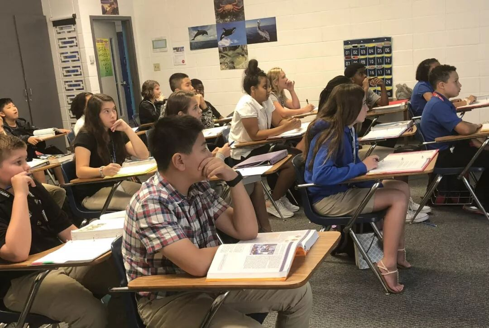
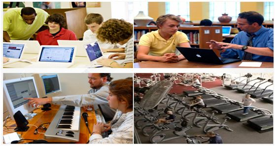

The "International Student Exchange Program" is based on the U.S. Congressional Exchange Education Act. It is a specialized non-profit organization designated by the U.S. Department of State to organize middle school students from around the world to participate in exchange studies at U.S. public or private middle schools, experience local cultural life, strengthen mutual understanding and communication, bring American educational philosophies and the American spirit to international students, and at the same time attract students from different countries...
The "International Student Exchange Program" is a specialized nonprofit organization designated by the U.S. Department of State to organize middle school students from around the world to study at public or private middle schools in the United States, experience local cultural life, strengthen mutual understanding and communication, bring American educational philosophy and spirit to international students, and absorb the excellent cultures of different countries. Currently, nearly 30,000 exchange students from over 100 countries travel to the United States each year for exchange and study.
The China-US Student International Exchange Program is an important part of the "International Student Exchange Program." It is a non-profit program established in recent years specifically for students from both countries, supported by the U.S. government.

This program also has a history in China. In the 1970s, it was introduced by the Ministry of Education and is an exclusive government program (J1 public program) accessible to a very small number of outstanding secondary school students, and has developed into an educational service program open to the whole society (F1 private program). The program program selects outstanding Chinese students to participate in exchange programs mainly for American students, boarding with local caring families, experiencing quality education in a new and safe environment, improving English proficiency, developing comprehensive potential, cultivating innovative thinking and international perspective, enhancing independent thinking and living skills, and laying a solid foundation for further study at world-renowned universities and becoming international talents.
In 1995, the Chinese government officially joined the project, and the U.S. Department of State filed it with the number EVP P-3-5950.

Official Cultural Exchange Program Designated by the U.S. Department of State Program Program Tips and Advantages ☞ Exchange student programs are highly secure and cost-effective ☞. Deepen your understanding of multiculturalism and self-awareness ☞. Language skills improve rapidly ☞. Develop the habit ☞ of 'active communication' and then 'effective communication.' Foster an attitude of gratitude, respect, and tolerance

In 2019, Liaoning Overseas Study successfully granted exchange student qualifications and admission to students from Northeast Yucai Bilingual School, Liaoning Experimental Middle School Branch, Shenyang No. 43 Middle School, and other schools. We look forward to their successful achievements in the United States! Through the exchange student program, outstanding Chinese students are brought out to the world

Appendix: "U.S. Department of State Act on Public High School Exchange Programs":
This section governs Department of State designated exchange visitor programs under which foreign national secondary school students are afforded the opportunity for up to one year of study in a United States accredited public or private secondary school, while living with an American host family or residing at an accredited U.S. boarding school.
High school exchange programs are a U.S. Department of State legislature granting foreign high school students the opportunity to study for up to one year at a public or private middle school accredited in the United States, during which they live with a host family in the U.S.; Or attend classes at a certified boarding school.

Exchange students may participate in school sanctioned and sponsored extra-curricular activities, including athletics.
Exchange students can participate in on-campus and school-organized extracurricular activities, including various sports competitions.

Student employment. Exchange students may not be employed on either a full or part-time basis but may accept sporadic or intermittent employment such as babysitting or yard work .
Exchange students are not allowed to do full-time or part-time work, but they can do odd jobs, such as childcare or courtyard work. (The above text is excerpted from the U.S. Department of State-
U.S. Department of State website)


Let the knowledge in books come alive: Traveling ten thousand miles is not as good as reading ten thousand books
From your very first day at school, your mother tells you, "Read ten thousand books, travel ten thousand miles."
If the positions are reversed, without sufficient knowledge as a premise, even after traveling thousands of miles, you will be nothing more than a postman.
The poor become wealthy because of books, the rich become honored because of books. Fools gain wisdom from books, and the wise benefit from books. You only see the glory of reading, but do not see the decline of reading.

A lovely homestay

Advanced teaching
A wide range of extracurricular activities

The organizer reserves the final right of interpretation for the above content and reserves the right to adjust the itinerary order and schedule appropriately based on actual circumstances, emergencies, or force majeure without reducing the itinerary content. Registration requirements: 1. Students aged 12-18 currently enrolled in school;
2. Be in good health, law-abiding, have a certain financial foundation, and there is a risk of illness or accidents during long-distance travel. Parents must be able to bear the risks. Project Fee: 16,000 RMB Project fee includes:
Transfer to American schools, host family meals, accommodation, transportation, graduation certificate, school management fees. Self-paid expenses:
Collect 10,000 yuan for airfare, insurance, visa fees, service fees, etc.
Once the above fees are paid, they are non-refundable. (If the visa is refused, after deducting the 1400 yuan visa fee collected on behalf of the agent, the full amount paid will be refunded.) Project fees do not include:
Passport, airport meals, and domestic luggage check-in fees within the United States (if any), local outpatient medical insurance, medical check-ups (voluntary), other personal expenses, and tickets to attractions for off-campus activities (optional). For details, please contact: Teacher Qiao: 13654052117 Teacher Liu: 13704038549
Teacher Chen: 13614027017 Teacher Cao: 18840011234 Registration address: Room 302, Liaoning Education International Exchange Service Center, No. 44-1 Nenjiang Street, Huanggu District, Shenyang, Liaoning Province Learn more about the exchange program Long press to scan the QR code
Add the teacher on WeChat for consultation


Liaoning Overseas Study: A third educational force beyond family and school education
Organizer Introduction: Established in 1996, dedicated to international education for 23 years; Professional institution for international education exchange by the Liaoning Provincial Department of Education; One of the first institutions to obtain the Ministry of Education's self-funded overseas study qualification; Executive director unit of the Ministry of Education Education Development Strategy Association. Focused on studying abroad, study tours, and international education...
“国际学生交流计划”是根据美国国会的《交换教育法案》，由美国国务院指定专门的非盈利性机构组织世界各国中学生到美国公立中学或私立中学进行交换学习，体验当地文化生活，加强相互了解与沟通，把美国教育理念及美国人精神带给国际学生，同时吸纳不同国家的优秀文化。 现在每年有超过100个国家的近3万名交换生前往美国交流学习。
中美学生国际交流计划是“国际学生交流计划”的重要组成部分，是近年来专门为中美两国学生设立的非赢利性项目，得到美国政府支持。
该项目到中国也有一定的历史，70年代由教育部引进，是极少数优秀中学生可以参与的专属政府项目（J1公立项目）和发展为面对全社会招生的教育服务项目（F1私立项目）。 项目内容是选拔优秀中国学生进入美国学生为主的交换学习，寄宿于当地爱心家庭，在全新且安全的环境中体验优质教育，提高英语水平，开发综合潜能，培养创新思维和国际化视野，增强独立思考能力和独立生活能力，为升入世界名校继续深造和成为国际化人才奠定坚实基础。
1995年中国政府正式加入该项目，美国国务院备案编号为EVP P-3-5950。
美国国务院指定官方文化交流项目 项目提点及优势 ☞交换生项目安全性高、性价比高 ☞ 了解多元文化加深认识自己 ☞语言能力迅猛提高 ☞养成了「主动沟通」再进而「有效沟通」的习惯 ☞培养了感恩、尊重与包容的态度
2019年，辽宁留学成功为来自东北育才双语学校、辽宁省实验中学分校、沈阳市第43中学等学校的学子们申请到交换生资格并获得录取，期待他们在美国取得良好的收获！ 通过交换生项目 让优秀的中国学生走向世界
附《美国国务院关于公立高中交换生项目的法案》 ：
This section governs Department of State designated exchange visitor programs under which foreign national secondary school students are afforded the opportunity for up to one year of study in a United States accredited public or private secondary school, while living with an American host family or residing at an accredited U.S. boarding school.
高中交换项目是美国国务院立法给予外国中学生进入美国认证的的公立或私立中学最长可以学习一年的机会，在这段时间，住在美国寄宿家庭；或在认证的寄宿学校上课。
Exchange students may participate in school sanctioned and sponsored extra-curricular activities, including athletics.
交换生可以参加校内和学校组织的课外活动，包括各种体育竞技活动。
Student employment. Exchange students may not be employed on either a full or part-time basis but may accept sporadic or intermittent employment such as babysitting or yard work .
交换生不允许做全职或兼职工作，但是可以接受做零工，比如看护孩子、庭院工作。 （以上文字摘自美国国务院-
U.S. Department of State网站）
让书本上的知识“鲜活”起来 读万卷书不如行万里路
从你上学第一天开始，妈妈就告诉你“读万卷书，行万里路”。
如果位置颠倒，在没有充分的知识作为前提的情况下，即使行了万里路，你也只不过是个邮差而已。
贫者因书富，富者因书贵。愚者得书贤，贤者得书利。只见读书荣，不见读书坠。
可爱的寄宿家庭
先进的教学
丰富的课外活动
主办方对上述内容有最终解释权，有权在不减少行程内容的前提下，根据实际情况、突发事件或不可抗力等因素对行程顺序及时间安排进行适当调整。 报名条件： 1. 12-18周岁在校学生；
2.身体健康，遵纪守法，有一定家庭经济基础，长途旅游有发生疾病或意外的可能性，家长需有能力承担风险。 项目费用： 16000元 项目费包含：
美国学校插班学习，寄宿家庭吃住、上下学交通，结业证书，学校管理费。 需自理费用：
代收机票、保险、签证费、服务费等 10000元。
上述费用一经缴纳，不能退还。 （如签证拒签，扣除代收签证费1400元，上述缴纳的费用全额返还）。 项目费不含：
护照、机场餐和美国境内行李托运费（如果有）、美国当地门诊医疗保险、体检（自愿）、其他个人消费及参加校外活动的景点门票（自愿参加）。 详情咨询 ： 乔老师：13654052117 刘老师：13704038549
陈老师：13614027017 曹老师：18840011234 报名地址 ： 辽宁省沈阳市皇姑区嫩江街44-1号 辽宁教育国际交流服务中心302 了解更多交换生项目详情 长按识别二维码
添加老师微信咨询
辽宁留学 家庭、学校教育外的第三种教育力量
主办机构简介： 1996年成立，专注国际教育23年； 辽宁省教育厅从事教育国际交流的专业机构； 首批取得国家教育部自费出国留学资质的机构； 教育部教育发展战略协会常务理事单位。 专注留学、专注游学、专注国际教育...
English edition. Select 中文原文 to compare with the original Chinese article.
This article is edited and published by Liaoning Overseas Study Service Co., Ltd. The content is for study abroad planning reference only. Unauthorized reproduction is prohibited.
Information on policies, regulations, admissions brochures, and program fees is timely. Please refer to the latest releases from official institutions and institutions in various countries; For detailed verification, please Contact an advisor。